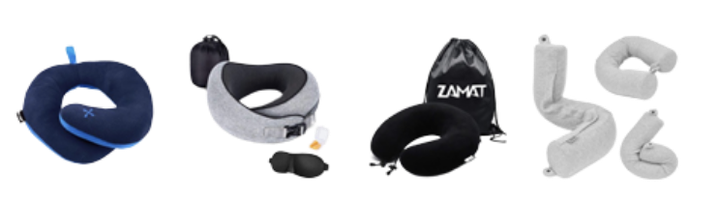
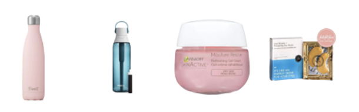
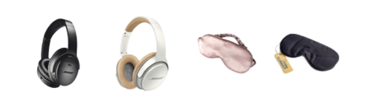

How to survive miserable flight?
For those of us trapped in the circle of hell known as economy class, flying can be a boring, stressful, and/or very unpleasant experience. But while microscopic leg room + inexplicably freezing cabin temp don’t exactly scream comfort, there’s definitely a LOT you can do to improve your travel experience anyway.
WHAT TO TAKE ON A LONG HAUL FLIGHT: ESSENTIALS & PACKING TIPS
GET A NECK PILLOW LIKE, YESTERDAY
Neck pillows are LIFE-CHANGING. If you don’t have one yet, buy one ASAP. It will improve the quality of your sleep so much that you’ll wonder how you ever survived a flight without it. No more neck cramps, no more awkward head bobbing. Even if you don’t get any actual sleep, you’ll have a much more comfortable flight.
WATER BOTTLE + MOISTURIZER
Planes are SUPER dehydrating because the cabins have so little moisture – they literally suck your skin dry. And flights never provide enough water. To combat this, bring your own bottle, fill it after security, and just guzzle water throughout the flight.
NOISE CANCELLING HEADPHONES, EARPLUGS, & SLEEP MASK
Planes are just… really f*cking loud, in general. The inside of a plane hovers at around 85 decibels. For reference, the volume of a typical “sleep disturbance” is between 40-55 decibels. So it’s no wonder that it’s hard to get proper rest on a plane.
Whether it’s via earplugs or fancy noise cancelling headphones, find some way to cut down on the ambient noise. And make sure you have a sleep mask to block out light, too – that affects the quality of your sleep also. Your body will thank you!!


